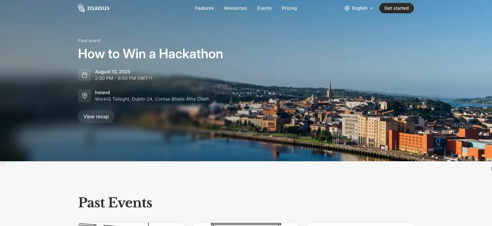
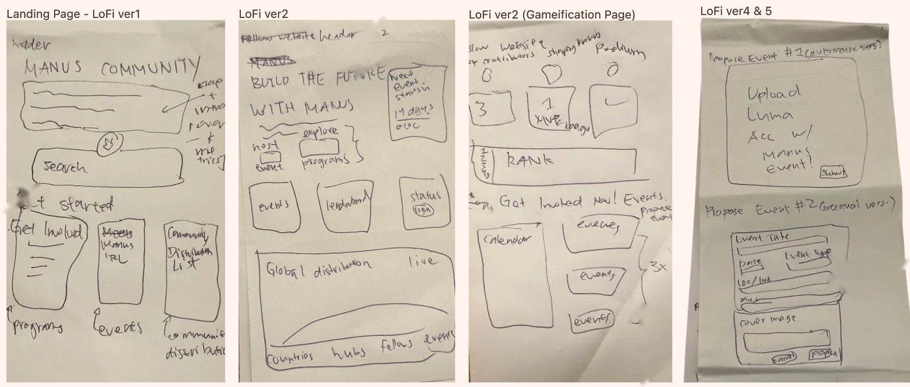
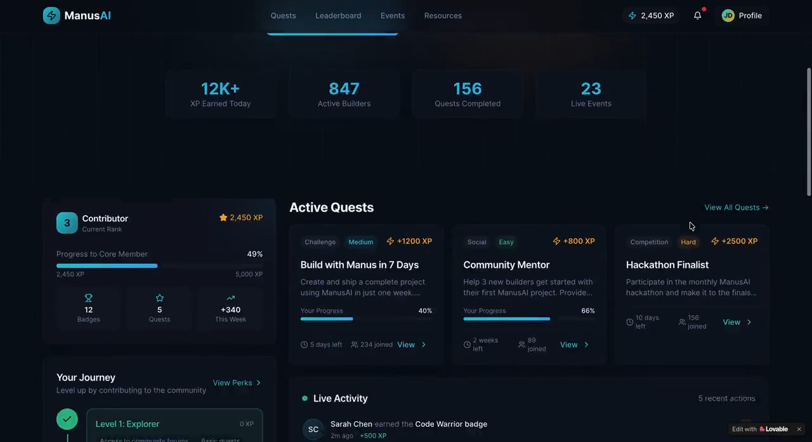
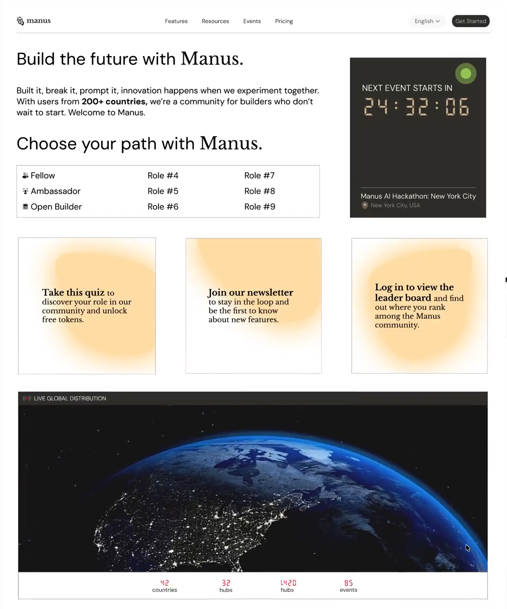
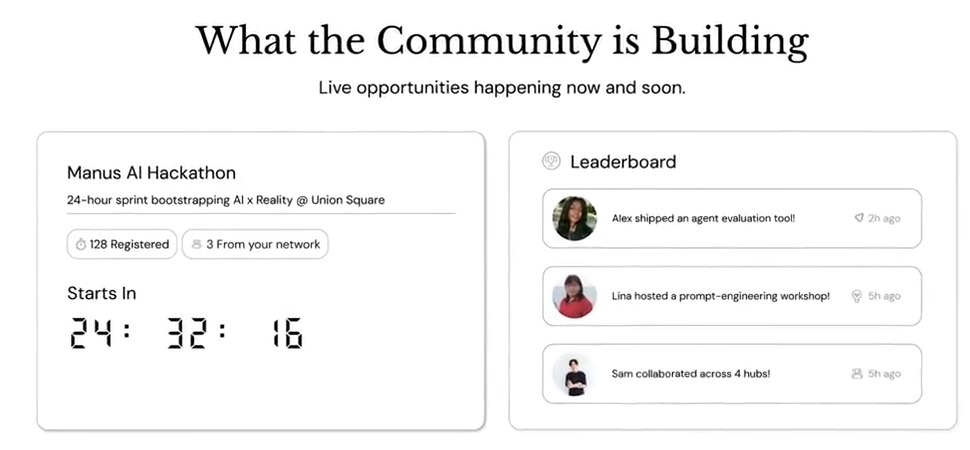
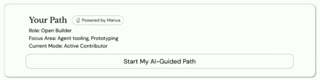
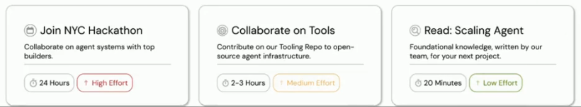

Redesigning the Manus AI community so new users stay.
I proposed, researched, designed and shipped the new community as its sole designer.
Manus asked what would make new users stay.
What Manus asked
Manus launched in March 2025 as one of the most capable general AI agents.
On the GAIA benchmark it reported 86.5% at Level 1 against 74.3% for OpenAI Deep Research.
It passed $100m in annual recurring revenue about eight months after launch.
What I found
The community page had two jobs. It had to draw new users in to learn the product and grow a power-user community that shares tips and advice.
New users landed on an archive of past events and left within seconds.
Before the redesign new-user retention was 30% among internal testers.
How I answered
As sole designer I ran 13 interviews, three rounds of usability testing and two research-led pivots.
I rebuilt the page’s information architecture around an AI-guided path.
The result: each user gets a personal pathway ranked by fit that carries its own explanation. One dashboard holds their role, events and contributions.
GAIA scores are self-reported by Manus at launch in March 2025. Revenue as announced by Manus in December 2025.
Context
The problem statement
“New users meet a highly capable product with no clear place to start. This affects non-technical newcomers who cannot tell where to begin and power users who have no way to be seen. It holds new‑user retention at 30%. A successful design gives every newcomer a clear first step and every power user a place to contribute.”
The work ran in six stages over three months.
Both came from testing
The data pinpointed that the failure was in converting acquired users to active users.
Featured-capability activation rate, measured in November 2025
Views, watch time and click-throughs, each video tagged by hand for the 1.5 Max capability it featured.
UTM links, deep links and referral codes tie each download to its video.
Feature-level events show whether, how often and how soon.
Activation rate = users who used the featured capability ÷ users who downloaded after watching that video.
The main reason was that Manus shipped capabilities faster than users could learn them.
Where new users came from
The founder’s bet for the 1.5 Max launch.
The only teaching channel inside the chat UI.
Two or three a week, asking how to get involved.
Where they landed

It converted almost none of them.
The community page was key to turning new users into active ones but failed to convert them.
People arrived on a hackathon that had already ended.
The page’s main button opened a recap of that past event.
Below sat an archive of past events. Most visitors left within seconds.
The notification badge was not teaching anyone how to use Manus. The UGC view counts also hid how few viewers went on to try the capability they saw. With the launch and the acquisition news, a wave of curious users was about to arrive. We planned to meet them on this page.
Discovery
New users could not tell what Manus could do for them.
Scrolling the old community page
The page opens on a hackathon that has already ended.
Next come dozens of meetups that have also already happened.
The only ask on the page is to host an event.
The products appear only as a list of names in the footer.
Most left within seconds of arriving.
In 13 interviews, the same three pain points kept surfacing.
13user interviews and secondary research
“I’ve been using Manus for weeks, but sometimes I can’t keep up with the constant upgrades like its 1.5 Max series. The community doesn’t help with that at all, it’s just a list of past events.”
“I opened the community page and just didn’t know what I was supposed to do. There’s no indication of where to start or what counts as participating.”
“I want to contribute and share what I’ve built, but I have no idea if anyone will see it or if it even matters. There’s no feedback, no signal that my work is visible.”
Recurring pain points
Non-technical users couldn’t identify what Manus could do for them.
The community felt like an archive. Users disengaged within minutes.
Users wanted to contribute but had no clear pathway. They stayed passive.
The problem also extended to power users who had no structured way to share their work.
Community newcomers
Doesn’t know where to startor what Manus can do for them. Wants to learn fast.
Design question How might we make AI capabilities legible to everyday users?
Power users
Has no structured way to share their workWants visibility and credibility for their work.
Design question How might we turn passive members into active contributors?
No existing community gave power users fast feedback and lasting contributions.
Searchable but slow and quiet
Fast but scattered
Rewards activity over impact
So we asked two questions
How might we make AI capabilities legible to everyday users?
How might we turn passive members into active contributors?
Solution
To fix conversion, I organised the redesign of the community page around three principles.
Each capability is shown doing something on the first screen before the user is asked for anything.
Each visit shows one thing worth doing and reveals more as users take part. Nothing new to learn first.
Everything shown states why it was shown. Users can check the fit and flag a wrong one.
Testing
First, I tested whether points and levels would drive engagement.
Adding points, levels and quests will get people engaging with the community.
Second, I moved to a static structure to make the products legible.

Promotes the product and AI-human collaboration.
Scalable buttons added in version 2.
A status page later dropped in testing.
Event uploads stayed manual through Luma for reliability and speed to launch.
So I tested the two opposites to find a middle.

Rewarded activity with points, levels and quests.

Showed every product clearly. Nothing was personalised.
Testers found the gamified version overwhelming and could not say what the mechanics were for.
Testers reported confusion about getting around.
Testers were unclear what the game mechanics were for.
Testers reported confusion about role progression.
Testers found the static version clear but lost interest, lingering only on what moved.
Users lingered here.
Users spent less time here.
Users spent less time here too.
Users lingered here.
What this told me
- The structure had to change. The information architecture needed realignment.
- Interactions had to feel alive. Users were drawn to interactivity that felt personally relevant. I began another round of iteration for longer time on page.
That pointed to a guided approach, refined over three rounds.
Choose your path with Manus.
Iteration 1: choose your path
Shows every way in at once
Nine choices on arrival
Your Path
Powered by ManusRole Open Builder
Focus area Agent tooling, prototyping
Current mode Active contributor
Start My AI-Guided PathIteration 2: Your Path card
“Start My AI-Guided Path” won on click-through
Shows a role but no next step yet
Your Path
Powered by ManusRecommended next steps
Why this: builds real-time collaboration skills
Why this: matches your recent activity
Why this: prepares you for upcoming roles
Iteration 3: next steps on the card
Each next step says why it was picked
Relies on the AI getting the role right
I challenged the PM on one design because each new role would break the card layout.
Before: a fixed three-card layout with one card per opportunity
After: one role-agnostic template filled by the AI for each user
Collaborate on agent systems with top builders.
Why this matters→
Builds real-time collaboration skills.
Bring builders in your city together.
Why this matters→
Grows your local community.
Introduce classmates to Manus.
Why this matters→
The same card works without a redesign.
Showcase builders across your region.
Why this matters→
The same card works without a redesign.
Illustrative cards. Only the hackathon card is from the shipped design.
Final design
So I proposed a dashboard that guides every user to a first contribution.

Role, active path, upcoming events and pending contributions in one place.

Infers each user’s role, focus area and mode. Recommends a next step with a reason.

Ranked by fit. Hackathons, ambassador programmes and campus leadership surface at login.
The dashboard links straight to the events calendar for a first contribution.
The redesign answers each pain point with one part of the design.
For new users
“There’s no indication of where to start.”
→“I can’t keep up with the constant upgrades.”
→No sense of what counts as participating
→For power users
No structured way to share what they build
→“No signal that my work is visible.”
→Wanted visibility and credibility
→Before build, stakeholder sessions gave every recommendation an owner and an API.

Wanted
Concerns and questions
A maintainable system, accurate data and privacy compliance
Scraping events from Luma, fragile automation and consent risks
Active participation, self-onboarding and visible community leaders
Explicit user input and clear ownership of content
A scalable system, less support burden and clear success metrics
What happens when roles double? How do we measure success?
What we decided
An explicit “Host an Event” button and a manual submission flow. Consent is clear and nothing is scraped from third parties.
Modular components let roles be added or removed without a redesign.
Redrawn from the stakeholder map I built with engineering, the community team and the PMs.
The final design brought role, path and events into one dashboard.
The dashboard acts as a single home where role, active path, upcoming events and pending contributions sit in one place. Reminders only surface when something needs attention.
The AI-guided path reflects each user’s role back to them.
Your Path works out each user’s role, focus area and mode from what they already do on Manus. Its “Recommended this week” list is ranked by fit and gives a reason for every pick.
Recommendations take on new roles without a layout change.
At login the AI surfaces hackathons, ambassador programs and campus leadership. It can include roles that don’t exist yet.
Measuring
Public launch will answer three open questions.
Questions for public launch
What does inferring role, focus and mode from behaviour do to retention, compared with asking users to pick?
Does a reason on every recommendation improve clarity on where to start and how to contribute?
Does the template hold up as the community adds roles that did not exist at launch?
Internal testing already backs the hypothesis on clarity and retention.
Newcomers can find a way in
Power users have a place to be seen
Live data from internal testing users at Manus after the AI-guided architecture was rolled out to them. The redesign is approved and in production. It has not yet launched publicly.
In conclusion, guidance kept people where game mechanics did not.
What testing showed about each principle
The static version showed that newcomers needed to see what Manus does before anything else. Clarity alone still did not keep them on the page.
Testers lost their way among points and levels. They stayed when the page offered one guided next step at a time.
Each recommendation states why it was picked. Users can check that reasoning and flag a pick that does not fit.
How can we scale this work across Manus?
What users see
Recommended This Week
Prioritized by fit. Not engagement.
Collaborate on agent systems with top builders.
Contribute to the open-source tooling repo.
Foundational knowledge for your next project.
Add lightweight feedback. A thumbs up or down on every pick makes the AI’s decisions more transparent.
What the team tracks
Days from joining to first meaningful action
Days since joining
Pick ratings this week
Illustrative figures that show the measures
Track time to first meaningful action. A better measure of real contribution than time on site.
Concept mockups. The remaining work would be finishing development and launch.